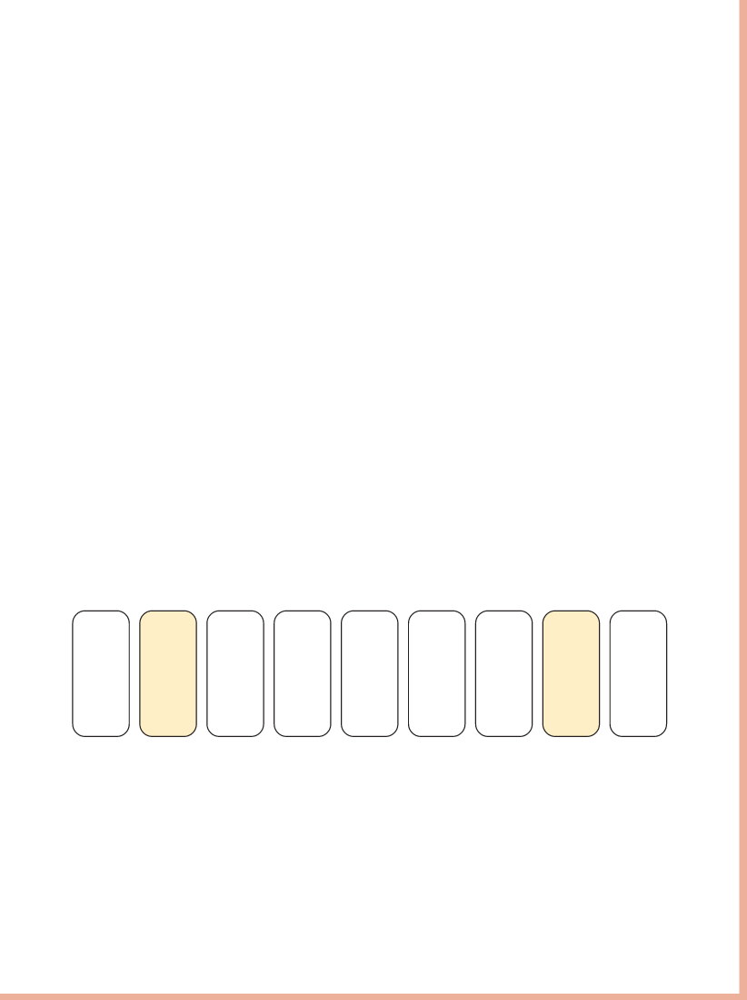

2)
QUAIS FORMAS DE PAGAMENTO À VISTA VOCÊ CONHECE?
3)
QUAIS FORMAS DE PAGAMENTO A PRAZO VOCÊ CONHECE?
CÁLCULOS DO DIA A DIA
EM MUITAS SITUAÇÕES DO DIA A DIA, PRECISAMOS FAZER CÁLCULOS RAPIDAMENTE.
É MUITO PROVÁVEL QUE VOCÊ RESPONDA QUASE SEM PENSAR A PERGUNTAS DO TIPO:
• SE AGORA SÃO 9 HORAS E 30 MINUTOS, DAQUI A UMA HORA QUE HORAS SERÃO?
• NA SEMANA PASSADA, O TOMATE CUSTAVA 4 REAIS E 80 CENTAVOS O QUILO.
SE HOJE O QUILO ESTÁ 2 REAIS MAIS CARO, QUANTO ELE ESTÁ CUSTANDO?
AS PRÓXIMAS ATIVIDADES FORAM ORGANIZADAS PARA VOCÊ AMPLIAR SEU REPERTÓRIO DE CÁLCULO E PARA AUXILIÁ-LO A FAZER OUTRAS OPERAÇÕES.
1)
OBSERVE AS CARTAS QUE ESTÃO PINTADAS.

VAMOS ADICIONAR: 2 + 8 = ___.
ENCONTRE OUTROS DOIS NÚMEROS DESSAS CARTAS QUE TAMBÉM SOMAM 10 E PINTE-OS DA MESMA COR.
QUAIS NÚMEROS VOCÊ PINTOU?
Resposta pessoal.
___ + ___ = 10
Nas atividades 1, 2 e 3, os estudantes podem refletir sobre os conceitos de comér-cio físico e virtual, formas de pagamento à vista e a prazo, e refletir sobre as diferentes estratégias de comercializa-ção de produtos.
Proponha uma roda de conversa sobre o tipo de comércio que é mais acessível aos estudantes e sobre quais formas de paga-mento eles gostam de utilizar e o porquê.
Inicie o tópico “Cálculos no dia a dia” solicitando aos es-tudantes que descrevam em que situações cotidianas eles precisam realizar cálculos e quais estratégias utilizam.
Pergunte quando eles consi-deram necessário utilizar a calculadora e se fazem isso com frequência.
SUGESTÃO PARA O PROFESSOR
Para aprofundar os conhecimentos, sugerimos ler o artigo A beleza da Matemática (disponível em: https://www.youcubed.org/wp-content/uploads/2020/01/O-que-%C3%A9-a-Beleza-Matem%C3%A1tica.pdf, acesso em: 21 maio 2024).